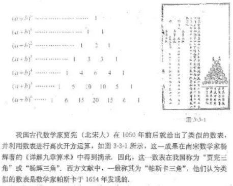

第六章 计数原理
注: 如非特殊说明, 以下图片都来自高中数学考点题解公众号
6.1 分类加法计数原理与分步乘法计数原理
1.分类加法计数原理:
完成一件事情有两种不同方案, 在第1类方案中有m种不同的方法, 在第2类方案中n种不同的方法, 那么完成这件事共有
N = m + n 种不同的方法.
2.分步乘法计数原理:
完成一件事情需要两个步聚, 做第1步有m种不同的方法, 做第2步有n种不同的方法, 那么完成这件事共有:
N = m . n 种不同的方法.
3.子集的个数
问题: n元集合A = {a1, a2, …, an}的子集有多少个?
子集个数 = $2^n$
6.2 排列与组合
6.2.1 排列
一般地，从n个不同元素中取出m(m≤n)个元素, 并按照一定的顺序排成一列, 叫做从n个不同元素中取出m个元素的一个排列(arrangement).
根据排列的定义，两个排列相同的充要条件是: 两个排列的元素完全相同，且元素的排列顺序也相同.
例如，123与132 虽然元素完全相同，但元素的排列顺序不同，它们也是不同的排列.
6.2.2 排列数
我们把从n个不同元素中取出m(m≤n)个元素的所有不同排列的个数，叫做从n个不同元素中取出m个元素的排列数，用符号$A_n^m$ 表示.
排列数公式:
$A_n^m =$ n(n - 1)(n - 2)...(n - m + 1)
$ = {n(n - 1)(n - 2)...(n - m + 1) \ \ \ * \ \ \ (n-m)*...*2*1 \over (n-m)*...*2*1}$
$ = {n! \over (n - m)!}$
$A_5^2 = 5*4 = 20$
$A_8^3 = 8*7*6 = 336$
$A_n^n = n!$
$0! = 1$
6.2.3 组合
一般地, 从n个不同对象中取出m (m≤n)个对象并成一组, 称为从n个不同对象中取出m个对象的一个组合.
123与132 元素完全相同，所以是不同的排列, 但是相同的组合.
6.2.4 组合数
从n个不同对象中取出m个对象的所有组合的个数, 称为从n个不同对象中取出m个对象的组合数, 用符号 $C_n^m$ 表示(Combination).
考虑到从n个不同对象中取出m个做排列, 可以分成两个步骤完成:
第一步, 从n个不同对象中取出m个, 有 $C_n^m$ 种选法;
第二步,将选出的m个对象做全排列, 有 $A_m^m$ 种排法.
由分步乘法计数原理有 $A_n^m = C_n^m * A_m^m$, 所以
$C_n^m = {A_n^m \over A_m^m} = {A_n^m \over m!}$
= ${n(n-1)...[n-(m-1)] \over m(m-1) x ... x 2 x 1}$
= $n! \over m! (n-m)!$
= $C_n^{n - m}$ 性质一
= $C_{n + 1}^m = C_n^m + C_n^{m - 1}$ 性质二
= $C_n^0 = 1$
6.3 二项式定理
6.3.1 二项式定理
更多资料可参考: 牛顿二项式_百度百科.html
二项式是只有两项的多项式，即两个单项式的和。是仅次于单项式的最简单多项式。
$(a + b)^n = C_n^0 a^n + C_n^1 a^{n-1} b + ... + C_n^k a^{n-k} b^k + C_n^n b^n$ (n是整数, 0≤k≤n)
等式右边的式子称为 $(a+b)^n$ 的展开式, 它共有 n+1 项,
其中 $C_n^k a^{n-k} b^k$ 是展开式中的第 k+1 项(通常用 $T_{k+1}$ 表示),
$C_n^k$ 称为第 k+1 项的二项式系数,
我们将 $T_{k+1} = C_n^k a^{n-k} b^k$ 称为二项展开式的通项公式.
6.3.2 二项式系数的性质
1.对称性: 与首位两端"等距离"的2个二项式相等.($C_n^m = C_n^{n - m}$)
2.增减性 与 最大值
当 k < $n + 1 \over 2$ 时, $C_n^k$ 随k的增加而增大.
当 k > $n + 1 \over 2$ 时, $C_n^k$ 随k的增加而减小.
当 n 是偶数时, 最大值: $C_n^{n \over 2}$
当 n 是奇数时, 最大值: $C_n^{n - 1 \over 2}, C_n^{n + 1 \over 2}$
∵ $(1 + x)^n = C_n^0 + C_n^1x + C_n^2x^2 + ... + C_n^nx^n$
令 x = 1, ⇒
$C_n^1 + C_n^2 + ... + C_n^{n-1} + C_n^n = 2^n$
例:
$(a + b)^6 = 1a^6b^0 + 6a^5b^1 + 15a^4b^2 + 20a^3b^3 + 15a^2b^4 + 6a^1b^5 + 1a^0b^6$
3.奇数项的二项式系数的和 等于 偶数项的二项式系数的和.
$C_n^0 + C_n^2 + C_n^4 + ... = C_n^1 + C_n^3 + C_n^5 + ...$
数学探究
杨辉三角的性质与应用

$C_n^m = C_{n-1}^{m - 1} + C_{n-1}^m$
4.二项式定理的应用
例1: 求证 $99^{98}$ - 1 能被100整除.
∵ $99^{98} = (100 - 1)^{98}$
= $C_{98}^0 100^{98} + C_{98}^1 100^{97}(-1) + C_{98}^2 100^{96}(-1)^2 + ... + C_{98}^{97} 100^1(-1)^{97} + C_{98}^{98} 100^0(-1)^{98}$
注意到上述右边的展开式中, 前面98项都是100的倍数, 最后一项为1, 由此可知 $99^{98}$ - 1 能被100整除.